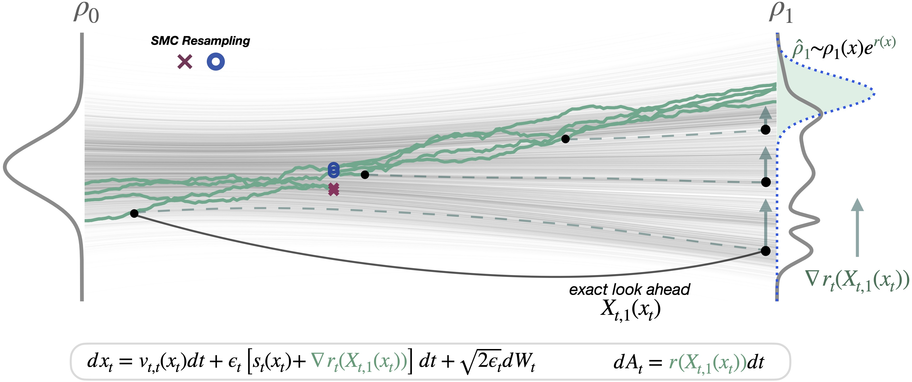

Introduction
Diffusions and flow-based models have become the backbone of modern generative modeling, producing remarkably realistic images and videos, and proved
to be highly successful tools across computer vision and scientific domains.
Sampling from these models can be seen as numerically solving an ordinary or stochastic differential equation (ODE/SDE), the coefficients of which are
learned neural networks.
Specifically, these methods learn neural networks to estimate a velocity field $b_t(x_t)$ and score function $s_t(x_t)$, and solve the following SDE
from $t=0$ (pure noise) to $t=1$ (pure data) to produce new samples:
$$
d x_t = [b_t(x_t) + \epsilon_t s_t(x_t)] dt + \sqrt{2\epsilon_t} d W_t, \quad x_0 \sim \mathcal{N}(0, I),
$$
where setting $\epsilon_t = 0$ corresponds to the deterministic case, often called the probability flow ODE (PF-ODE).
In practice, to enable controllable generation, it is often the case that we want to generate samples from
the model's distribution $p(x)$ that have high scores under some user-defined reward function $r(x)$.
Concretely, the goal is to generate samples from a distribution $q(x)$ that maximizes the following objective:
$$
\arg\max_{q} \left[\mathbb{E}_{q}[r(x)] - \lambda \times \mathrm{KL}(q \,\|\, p)\right]
$$
where $\lambda$ is a hyperparameter that controls the trade-off between the reward and deviating from the base distribution.
This problem has a closed-form solution: $q(x) \propto p(x) \exp(r(x) / \lambda)$,
which is referred to as the reward-tilted distribution. An active area of current research is how to best adapt the
dynamical equations (SDE/ODE) at inference time to generate samples from this tilted distribution.
Sampling from the Reward-Tilted Distribution
Efforts to align diffusion models for high-reward generation can be broadly divided into training-based and training-free approaches.
Training-based methods, often referred to as diffusion alignment techniques, optimize the model parameters so that the retrained model naturally produces higher-reward samples.
While effective, these approaches are computationally expensive and must be repeated for each new reward function.
Training-free methods, also known as test time scaling methods, on the other hand, modify the sampling process to bias generation toward higher-reward regions,
making them far more flexible when working with multiple or rapidly changing rewards.
In this work, we focus on training-free methods.
A common approach is to apply reward-guidance, which injects the gradient of the reward directly into the diffusion process to nudge samples toward higher-reward regions:
$$
dx_t = [b_t(x_t) + \epsilon_t s_t(x_t) + \color{red}{\epsilon_t \nabla r_t(x_t)}] dt + \sqrt{2\epsilon_t} d W_t, \quad x_0 \sim \mathcal{N}(0, I).
$$
In practice, however, most rewards (such as “text alignment” or “visual fidelity”) are only defined on clean samples $x_1$ at the end of generation.
Prior works address this by either
(1) ignoring the issue and evaluating the reward directly on the noisy state (e.g., $r_t(x) = t\,r(x)$), or
(2) using the denoiser $D(x_t) = \mathbb{E}[x_1 | x_t]$ to approximate the final image (e.g., $r_t(x) = t\,r(D(x_t))$).
Both strategies evaluate the reward at states that are not yet fully generated, leading to unreliable gradients, especially in the early stages of sampling.
Flow Map Trajectory Tilting (FMTT) offers a simple and principled alternative. Specifically, FMTT proposes using the flow map, which is a function $X_{t, 1}(x_t)$
that can traverse the probability flow ODE to accurately estimate the final state $x_1$ of each intermediate state $x_t$. By using the flowmap as a
look-ahead and computing the reward gradient at the estimated final state (e.g. $r_t(x_t) = t\,r(X_{t, 1}(x_t))$), FMTT enables consistent reward guidance
throughout the trajectory. We additionally unify sampling and search under one framework, allowing both exact sampling via importance weighting and
reward-tilted search that reliably finds high-reward samples. Please refer to the paper for more details.

Using the flowmap $X_{t, 1}(x_t)$ as a look-ahead inside the reward, reward information can be principly used through the tilted trajectories (green lines).
This allows better ascent on the reward, as well as remarkably simplifying the importance weights for exact sampling.
Text-to-Image Generation Results
We evaluate our FMTT algorithm on text-to-image generation using the flow map
from Align Your Flow, which distills
the FLUX.1-dev model into a 4-step flow map.
We consider three category of rewards: (1) Human Preference Rewards, (2) Geometric Rewards, and (3) VLM-Based Rewards.
Human Preference Rewards
Using human preference rewards, we can generate images with improved visual fidelity and text alignment.
Following prior works, we use a linear combination of
Pickscore,
HPSv2,
ImageReward, and
CLIP as the reward function
and quantitatively evaluate the performance on the
GenEval benchmark.
This benchmark evaluates the performance of text-to-image models using approximately 550
object-centric prompts and measures the quality of the generated images using pre-trained object detectors.
A summary of the results is shown in the table below. For more details, please refer to the paper.
| Method |
Mean |
Single Obj. |
Two Obj. |
Counting |
Colors |
Position |
Attr. Binding |
| FLUX.1 [dev] |
0.65 |
0.99 |
0.78 |
0.70 |
0.78 |
0.18 |
0.45 |
| FLUX.1 [dev] + Best-of-32 |
0.75 |
0.99 |
0.94 |
0.83 |
0.86 |
0.26 |
0.57 |
| FMTT (4 step diffusion lookahead) |
0.75 |
0.99 |
0.93 |
0.86 |
0.89 |
0.27 |
0.57 |
| FMTT (4 step flowmap lookahead) |
0.79 |
1.0 |
0.97 |
0.90 |
0.91 |
0.30 |
0.64 |
Geometric Rewards
A second class of rewards we consider are geometric rewards, which encourage invariance under simple geometric transformations such as masking, symmetry, or rotation.
These objectives make generation more controllable, enabling fine-grained layout adjustments and structured scene composition.
By guiding the model toward outputs that achieve high geometric rewards, we can position, align, and balance elements in the image more precisely.
Below, we show some examples.
VLM-Based Rewards
Finally, we also explore using pretrained vision-language models (VLMs) to judge our images.
Specifically, we provide the generated image and a natural-language yes/no question to the VLM, and use the model's confidence in answering "Yes" as the reward.
This makes it possible to express complex objectives entirely through language.
For example, asking "Is <PROMPT> a correct caption for the image?" encourages the generation of images that more accurately match the prompt.
Additionally, since some VLMs can also process multiple images, we can also use them to define objectives based on similarity, composition, or contrast between multiple images.
This approach provides a powerful and flexible way to steer generation toward arbitrary objectives by simply changing the prompt.
Below we show several examples.
Citation
@article{doe2048agi,
title={Artificial General Intelligence},
author={Doe John},
journal={nature},
year={2048}
}